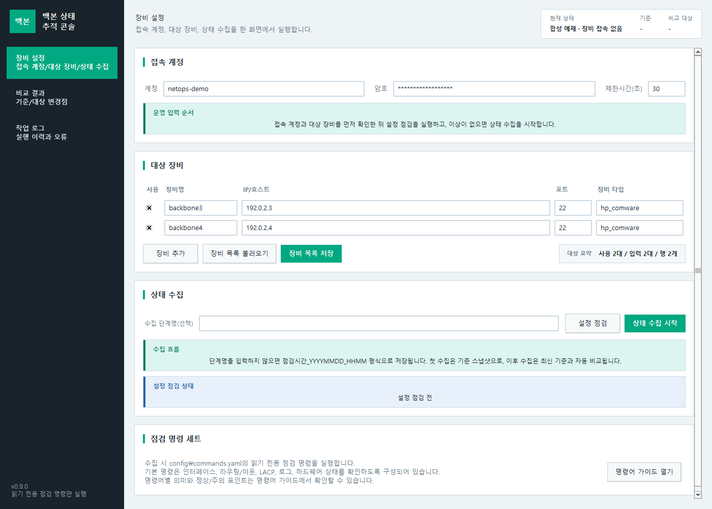
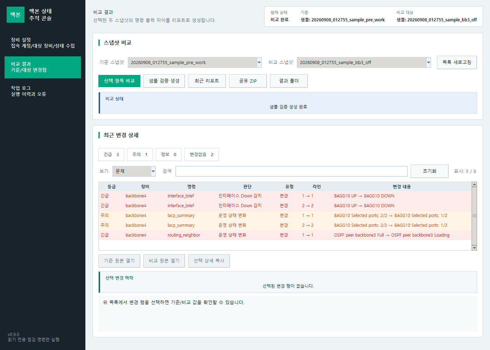
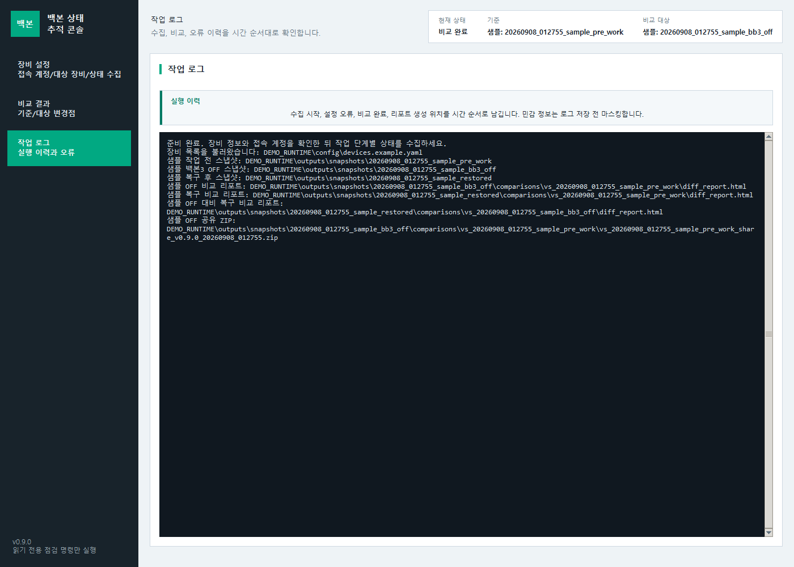

문서 버전: v0.9.0
작성일: 2026-08-24
대상: 백본 3/4호기 상태 점검 및 휴전 작업 검증 담당자
v0.8.52부터 프로그램 공통 테마는 HPE Aruba AirWave 계열 운영 콘솔을 참고한 차분한 색상과 조밀한 정보 배치를 사용합니다. v0.8.53에서는 장비 설정, 상태 수집, 비교 결과, 작업 로그 화면의 안내 패널과 선택 상태 표시를 더 명확하게 정리했고, v0.8.54에서는 비교 결과와 HTML 리포트에서 선택한 상태와 상세 맥락을 더 쉽게 추적하도록 개선했습니다. v0.8.55에서는 이 화면 기준을 사용자 가이드 이미지, 개발자 가이드, 릴리스 체크리스트, ZIP 산출물 검증 기준에 맞춰 마감했습니다. v0.8.57에서는 개발자 가이드에 현대화 전 문제 원인과 설계 대응 요약을 추가했습니다.
장비 설정에서 접속 계정, 백본3/4 대상 장비, 상태 수집을 한 화면에서 처리합니다.장비 추가로 행을 늘립니다.장비 설정 화면을 스크롤해 상태 수집 영역까지 이어서 확인합니다.점검시간_YYYYMMDD_HHMM 이름으로 저장됩니다.작업 로그 화면으로 자동 이동합니다.
config/known_hosts를 만듭니다. 파일 없음, 주석-only, 형식 오류, 미등록 키는 접속 전에 차단됩니다.장비 추가를 눌러 새 행에 장비명, IP/호스트, 포트를 입력합니다.대상 요약 칩에서 사용 N대 / 입력 N대 / 행 N개로 현재 수집 대상과 입력 행 수를 확인합니다.운영 입력 순서, 수집 흐름, 설정 점검 상태 패널은 계정/장비 입력 후 설정 점검, 상태 수집으로 이어지는 흐름을 보여줍니다.장비 목록 불러오기로 3대 이상이 들어 있는 YAML을 읽으면 필요한 만큼 행이 자동으로 늘어납니다.설정 점검은 장비 목록과 명령 세트 설정을 로컬에서 먼저 검증합니다.상태 수집 시작은 읽기 전용 점검 명령만 실행합니다.config/commands.yaml에 정의된 명령만 실행되며, show vrrp를 포함한 읽기 전용 상태 확인 명령만 사용합니다. shutdown, save, reboot 같은 변경 명령은 포함하지 않습니다.설정 점검과 스냅샷 목록 새로고침은 잠기며, 완료 후 다시 사용할 수 있습니다.
긴급, 주의, 정보, 변경없음 카드는 필터 버튼입니다.선택 변경 맥락 패널에 별도로 표시됩니다.device_connectivity 한 줄로 표시됩니다.
raw/*.txt에 별도 저장됩니다.| 등급 | 기준 |
|---|---|
| 긴급 | 장비 접속 실패, 명령 실패, 인터페이스 Down, LACP selected 수 감소, OSPF Full 이탈, cpu_usage 5초/1분/5분 값 중 70% 이상, memory_usage FreeRatio 30% 이하, power_status State가 Normal이 아닌 상태, major alarm, fault, abnormal, offline, missing |
| 주의 | cpu_usage 5초/1분/5분 값 중 50~69%, memory_usage FreeRatio 31~40%, minor alarm, warning, error, 라우팅/STP/로그/리소스 변화처럼 영향 확인이 필요한 변화 |
| 정보 | 접속 복구, cpu_usage 5초/1분/5분 값이 모두 50% 미만, memory_usage FreeRatio 40% 초과, 또는 긴급/주의 키워드가 없는 일반 출력 변화 |
| 변경없음 | 의미 있는 변경이 감지되지 않은 항목. HTML 리포트에서는 해당 등급을 선택한 뒤 필요 시 접힌 상세를 펼쳐 확인합니다. |
긴급, 주의, 정보, 변경없음 등급 카드만 보여줍니다.상태별 바로가기에서 장비/명령 버튼을 누르면 해당 명령별 상세 블록으로 바로 이동합니다.상세 보기를 누르면 현재 다른 등급 필터가 켜져 있어도 해당 상세가 보이도록 필터가 자동으로 맞춰집니다.기준 또는 비교에 샘플 스냅샷이 들어가면 샘플: 접두어로 실제 작업 증적과 구분합니다.변경없음 요약 카드 묶음과 명령별 상세 블록은 제목만 보이고 기본으로 접혀 있습니다.장비 설정, 비교 결과, 작업 로그 화면을 샘플 데이터로 캡처한 것입니다. 실제 장비 IP, 계정, 원본 출력은 포함하지 않습니다.샘플 검증 스냅샷은 실제 작업 전 기준으로 사용되지 않습니다. 샘플만 있는 상태에서 첫 실제 수집을 시작하면 작업 전 기준으로 저장됩니다. 샘플 스냅샷이 프로그램 상단 기준/비교 대상 또는 HTML 리포트 상단 기준/비교에 표시될 때는 샘플: 접두어가 붙습니다.
Windows 통합 ZIP 예시:
Get-FileHash -Algorithm SHA256 .\backbone_state_tracker_v0.9.0_windows.zip
python .\tools\verify_release_package.py .\dist\backbone_state_tracker_v0.9.0_windows.zip --type windows --require-manifestGitHub Release에서는 Windows ZIP과 같은 이름의 SHA-256 sidecar, release manifest, CycloneDX SBOM을 함께 받습니다. Source code (zip) / Source code (tar.gz)는 실행용 파일이 아닙니다.
압축 해제 뒤 실제 수집 전 gui\config\known_hosts를 직접 준비합니다. 배포 ZIP의 known_hosts.example은 형식 안내일 뿐 승인된 실제 키를 포함하지 않습니다.